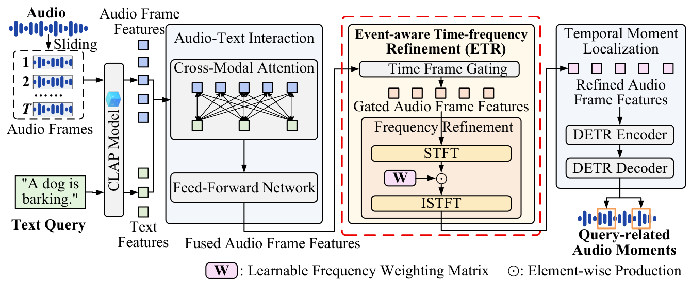
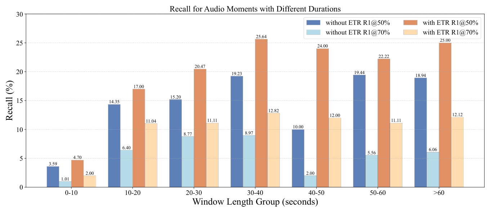

音频与文本交互
利用 CLAP 提取音频帧与文本特征，通过跨模态注意力建立查询与声音之间的语义联系。
Feiyang Xiao†, Li’ang Luo†, Kejia Zhang, Qiaoxi Zhu,
Guangjun He, Pengming Feng, Jian Guan*
Harbin Engineering University · University of Technology Sydney
State Key Laboratory of Space Information System and Integrated Application
† 共同第一作者 * 通讯作者 / NCMMSC 2026
面向音频时刻检索的融合后事件感知时频细化
Audio Moment Retrieval · AMR
给定一段长录音和一句自然语言查询，AMR 需要找到与描述相符的声音事件，并返回它的开始时间与结束时间。它不仅判断录音中是否出现某种声音，还要定位这段声音具体发生在何时。
“物体相互碰撞，并响起警报”
长录音 + 文本查询 相关音频片段 1–3 秒
示例 01 的人工标注；一条查询也可能对应多个时间区间。长录音中，背景声、相似事件和重叠声源都会干扰目标定位。ETR-AMR 在音频与文本融合之后进一步细化特征，为时间边界预测提供更有区分力的事件表征。
在跨模态交互与时间定位之间，
增强事件响应，减少无关干扰。
利用 CLAP 提取音频帧与文本特征，通过跨模态注意力建立查询与声音之间的语义联系。
时间帧门控调节各时刻的响应，频率细化进一步处理融合特征序列中的时频成分。
将细化后的特征送入 DETR 定位模块，预测候选片段的起止时间与置信度。

三个真实样本，比较引入 ETR 前后的检索结果。
佩戴耳机体验更佳；视频按原始速度播放。
绿：真实标注 蓝：未使用 ETR 红：使用 ETR。IoU 为首位预测与各真值区间的最大时间交并比；展示的是论文中的选定案例，不代表全部测试样本。
CASTELLA 测试结果
同一训练协议下的对比 · 单位 % · 越高越好
R1@50% 较 UVCOM +7.05 个百分点
R1@70% 较 UVCOM +5.20 个百分点
mAP-avg 较 UVCOM +3.85 个百分点
| 方法 | R1@50% | R1@70% | mAP@50% | mAP@70% | mAP-avg |
|---|---|---|---|---|---|
| AM-DETR | 19.30 | 7.05 | 15.93 | 4.82 | 6.41 |
| QG-DETR | 13.88 | 5.86 | 13.28 | 4.33 | 5.71 |
| UVCOM | 22.35 | 9.87 | 20.63 | 6.81 | 8.78 |
| ETR-AMR OURS | 29.40 | 15.07 | 25.35 | 11.15 | 12.63 |
ETR-AMR 在 CASTELLA 的以上五项指标中领先对比方法；在其他数据集上的收益存在差异，并非所有场景均领先。
在 CASTELLA 上按目标片段时长分组，对比有无 ETR 时的 R1@50% 和 R1@70%。横轴是目标片段的时长，并非滑动窗口的配置长度。

例如，40–50 秒组的 R1@50% 由 10.00% 提升至 24.00%，R1@70% 由 2.00% 提升至 12.00%。短事件组的整体召回率仍然较低。
@inproceedings{xiao2026etramr,
title = {Post-fusion Event-aware Time-Frequency Refinement for Audio Moment Retrieval},
author = {Xiao, Feiyang and Luo, Li'ang and Zhang, Kejia and Zhu, Qiaoxi and He, Guangjun and Feng, Pengming and Guan, Jian},
booktitle = {NCMMSC 2026},
year = {2026}
}根据当前论文题名、作者及录用信息整理；正式出版后的卷页与 DOI 可在公布后补充。